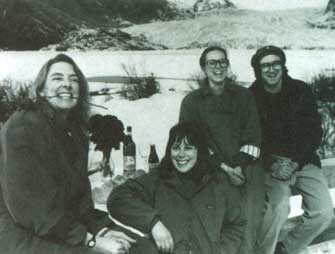
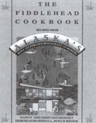

Alaska's Fiddlehead Restaurant: Barters & Bootstraps
Organic farmers start business and involve employees in decision making process.
By Karen Bokram
August/September 1991
WHEN DEBORAH MARSHALL CAME to Anchorage, in 1974, with sister, Lydia, and a musician from New York named Scott Miller, she was looking for bluer skies and taller mountains; a sense of spirit and purpose. What she found was mooseburgers. Seeing a chance to shape her future, to contribute to her community and new home, and to eat a creature smaller than her car, Deb and her band of modern pioneers came out of the cold and into the kitchen.
Her first restaurant, The Bread Factory, made soup, bread, and a small pile of money. Armed with the knowledge of what it takes to make it in the restaurant business ("a constantly replenishing stock of creativity, love, energy, and compassion," says Deb), she headed southeast to Juneau. That was 1978 and the restaurant was the Fiddlehead Restaurant and Bakery. Thirteen years later, Deb hasn't left either.
What she did leave behind were a lot of the "everybody-is-equal" management techniques she acquired from years in a collective selling organic produce. Deb exchanged that for a happy blend of employee-orientated management and benefits combined with top-down leadership. The result? A company with a conscience and an effective operating plan.
In the beginning, Deb approached her restaurant with much the same attitude as in her collective days. "We made all the decisions together. Not just the owners but the staff. If we were debating whether or not to put steak on the menu, everyone sat down and talked about it. When the discussion ended, it was two years later."
As business blossomed and the competition stiffened ("we were the only game in town for the first four or five years," says Deb), the Fiddlehead had to outgrow the "collective" style of management. "Group decision-making just wasn't effective. We needed to move quicker than our organization was able to. We needed a change."
The change became conscientious decision-making within a traditional corporate structure. Now there is a team of four that decides Fiddlehead policy: Deb, representing management; a chef, representing the kitchen; a personnel manager speaking for the wait staff; and an operations manager, reminding everyone of the bottom line.
Interestingly, Deb sees the same kind of change happening in the collectives: "Even though the ideals have remained intact, a lot of these organizations are finding that traditional top-down management is essential to their survival. You have to be re sponsive, be able to react to the market." Which isn't to say that Deb has shifted away from her most valuable resource, her employees. "I want to involve people. If the interest is there, our people can go as far as they want." On the flip side, Deb has also come to another realization that has changed her style. "Not everyone wants to be owner, not everyone wants to be involved. There are just people who want to punch in, punch out, and leave work behind," she says.
A few of the old employee-management principles did stay with her, though. In keeping with her old ideals, Deb provides benefits that are unheard of throughout most of the restaurant industry: health care plans, retirement programs, a savings program, and profit sharing. Deb is proud that she can provide 45 excellent jobs for Alaskans. "People can support families when they work here," she says. Deb has even started a food co-op for Fiddlehead employees: Once a month employees can order items in bulk and pay cost, saving a considerable amount over other Alaskans who must tolerate the high prices for ferried fresh produce.
The same quality Deb gives her employees, she also gives her customers. Everything at the Fiddlehead is prepared with the freshest ingredients the sea and land have to offer, prepared as naturally and healthfully as possible. The restaurant firmly believes in organic ingredients, recycling, and buying products from socially responsible companies. With so much care and attention, can virtue pay off? Deb laughs at this question. "We haven't shown a profit in quite a few years. A 3 or 4% profit is a great year; 2% is our goal."
But this commitment to quality does have the more than 100,000 customers coming back, some who dine up to 10 times a week. "I believe that after 15 years, the market can taste the difference. Most people don't realize that we use organic flours. We even make our own hamburger buns. It costs us more but I think people really enjoy the result."
The search for the highest-quality ingred ients that will keep customers coming back has led Deb to an innovative way to secure the freshest produce specialities, such as rhubarb. "We found that our suppliers just weren't doing enough business off us. So we decided to lease a plot of land and hire farmers to plant on our behalf. That way there is no risk to them and we get the quality of produce we want."
The Fiddlehead's long-standing reputation for wonderful food led Deb and her team down two new paths recently: One, the addition of a second floor to the restaurant ("a big investment in our future," says Deb), and two, the first Fiddlehead cookbook.
Written with Nancy and John DeCherney, two Culinary Institute of America grads who now oversee the Fiddlehead kitchen, and Susan Brook, a writer and fanner, The Fiddlehead Cookbook is an homage to the cuisine and characters that have made the Fiddlehead such a success. Expect to find their recipes for robust soups and sandwiches; light and healthy vegetarian and seafood pastas; grilled meats and stirfries; sauces and salsas; and sourdough breads and muffins. Also featured are wonderful desserts (espresso-chocolate cheesecake, Fiddlehead brownies, and orange-wine cake to name a few), as well as their own, very unique local creations: Fiddlehead pesto sauce (made with the regional fiddlehead fems) and Halibut Nicoise are but two.
And, no, not one mooseburger recipe in the bunch.
The Fiddlehead Restaurant and Bakery (907/586-3150) is at 429 West Willoughby Avenue, Juneau, AK 99801.
12 slices hearty bread (Deb recommends her sunflower-millet bread)
3 cups guacomole
12 tomato slices (2 large tomatoes)
6 slices (6 ounces) Cheddar cheese
6 slices (6 ounces) Jack cheese
6 tablespoons roasted sunflower seeds
6 tablespoons alfalfa sprouts
1. Preheat broiler.
2. Spread each slice of bread with 1/4 cup guacamole and place on a cookie sheet.
3. Lay 1 slice of cheddar on each of 6 slices of bread, 1 slice of Jack on each of the remaining slices, and place under broiler.
4. When cheese has melted, remove from heat, top each piece of bread with a slice of tomato, and put seeds on the 6 slices with the cheddar cheese, sprouts on the 6 with Jack.
5. Transfer to a serving platter and serve open-faced, giving each person a slice with Cheddar and one with Jack cheese.
Preparation and cooking time: 30 minutes, including preparing the guacamole.

Deborah Mar shall (left) with fellow Fiddle headers Susan Brook, Nancy DeCherney, and John DeCherney.
|

|
|